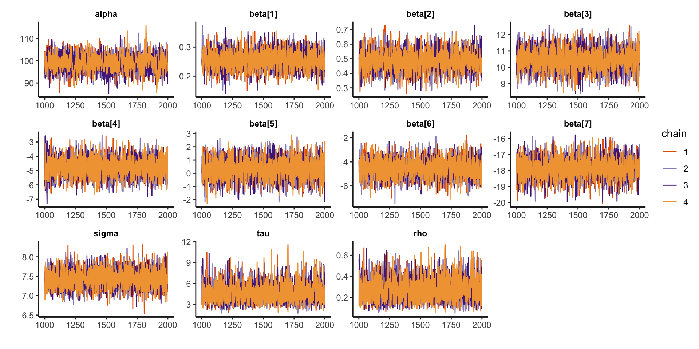

Hierarchical Models
Prof. Sam Berchuck
Feb 27, 2025
Review of last lecture
On Tuesday, we learned about missing data, including various types: MCAR, MAR, and MNAR.
We learned about two Bayesian approaches to missing data under the MAR assumption:
Joint model that assumes the missing data are parameters.
Multiple imputation.
Moving forward: Up until today, we have dealt with independent data. Today, we will look at our first example of dependent data!
Linear regression assumptions
\[\begin{aligned} Y_i &= \alpha + \mathbf{x}_i \boldsymbol{\beta} + \epsilon_i,\quad \epsilon_i \sim N(0,\sigma^2)\\ &= \mu_i + \epsilon_i. \end{aligned}\]
Assumptions:
\(Y_i\) are independent observations (independence).
\(Y_i\) is linearly related to \(\mathbf{x}_i\) (linearity).
\(\epsilon_i = Y_i - \mu_i\) is normally distributed (normality).
\(\epsilon_i\) has constant variance across \(\mathbf{x}_i\) (homoskedasticity).
Independence Assumption in Linear Regression
We assume that the residuals \(\epsilon_i\) are independent:
\[\mathbb{C}(\epsilon_i, \epsilon_j) = 0, \quad \text{for} \quad i \neq j,\] where \(\mathbb{C}(X, Y)\) is the covariance between two random variables \(X\) and \(Y\). As a note: \(\mathbb{C}(X, X) = \mathbb{V}(X)\).
This implies that the observations \(Y_i\) and \(Y_j\) are independent, and their correlation is zero.
- Correlation: \(\rho(X,Y) = \frac{\mathbb{C}(X, Y)}{\sqrt{\mathbb{V}(X)\mathbb{V}(Y)}}\).
Real-World: Dependent Observations
However, in real-world data, the independence assumption often does not hold:
Repeated measures data (e.g., same individual over time).
Clustered data (e.g., patients within a hospital).
Longitudinal data (e.g., disease severity measures over time).
Spatial data (e.g., disease counts observed across zip codes).
The Challenge
If we assume independence in the presence of correlation:
Biased parameter estimates: Parameter estimation will be biased due to group-level dependencies that effect the outcome.
Underestimated uncertainty: The model will not account for the true variability, leading to narrower confidence intervals.
Inaccurate Predictions: Predictions for new groups may be biased because the model doesn’t properly account for group-level variability.
Thus, we need a way to account for dependencies between observations, especially when data are grouped or clustered.
Example of Hierarchical Data
Hierarchical data refers to data that is organized into groups or clusters, where each group contains multiple observations.
Consider data from patients within hospitals. Each patient is being treated in a hospital, with multiple patients belonging to each hospital.
In this case, the observation for a patient is indexed by two variables:
\(i\): hospital index.
\(j\): patient index, nested within hospital.
So, for patient \(j\) within hospital \(i\), we write the response as \(Y_{ij}\).
Observations with Two Indices: \(Y_{ij}\)
\(Y_{ij}\) represents the response for patient \(j\) in hospital \(i\).
The first index \(i\) represents group-level effects (e.g., hospital-level).
The second index \(j\) represents individual-level observations (e.g., patient).
We typically say that \(i = 1,\ldots,n.\) and \(j = 1,\ldots,n_i\).
The total number of observations is \(N = \sum_{i = 1}^{n}n_i\).
Why Two Indices?
Having two indices allows us to model both:
Within-group variation (differences between patients within the same hospital).
Between-group variation (differences between hospitals).
The hierarchical structure captures both types of variation.
Conceptualizing Hierarchical Data
Consider the example of patients within hospitals:
Each data point (i.e., observed data \(Y_{ij}\)) represents an outcome measured on a patient.
The data points are grouped by hospital, indicating that patients from the same hospital are likely to have similar outcomes due to shared hospital-level factors.
This is a typical example of hierarchical data.
Hierarchical Model
Now, we can see how hierarchical data appears in the model:
\[Y_{ij} = \alpha + \mathbf{x}_{ij} \boldsymbol{\beta} + \theta_i + \epsilon_{ij},\quad \epsilon_{ij} \stackrel{iid}{\sim}N(0,\sigma^2).\]
Subject-specific objects:
\(Y_{ij}\): response for patient \(j\) in hospital \(i\).
\(\mathbf{x}_{ij}\) are the predictors for patient \(j\) in hospital \(i\).
\(\epsilon_{ij}\): residual error for patient \(j\) in hospital \(i\).
Hierarchical Model
Now, we can see how hierarchical data appears in the model:
\[Y_{ij} = \alpha + \mathbf{x}_{ij} \boldsymbol{\beta} + \theta_i + \epsilon_{ij},\quad \epsilon_{ij} \stackrel{iid}{\sim}N(0,\sigma^2).\]
Group-specific objects:
- \(\theta_i\): group-specific parameter for hospital \(i\), accounting for hospital-level variation (group-specific, random effect).
The group-specific parameters are responsible for inducing correlation into the model.
Hierarchical Model
Now, we can see how hierarchical data appears in the model:
\[Y_{ij} = \alpha + \mathbf{x}_{ij} \boldsymbol{\beta} + \theta_i + \epsilon_{ij},\quad \epsilon_{ij} \stackrel{iid}{\sim}N(0,\sigma^2).\]
Population parameters:
\(\alpha\): intercept for the entire population.
\(\boldsymbol{\beta}\): regression parameters for the entire population.
\(\sigma\): residual error parameter for the entire population.
Random Intercept Model
\[Y_{ij} = \alpha + \mathbf{x}_{ij} \boldsymbol{\beta} + \theta_i + \epsilon_{ij},\quad \epsilon_{ij} \stackrel{iid}{\sim}N(0,\sigma^2).\]
From a frequentist perspective, this model may be called a random intercept model, but in the Bayesian framework all parameters are random variables, so the terms fixed and random effects don’t apply.
\(\theta_i\): group-specific parameters (random effect).
\(\alpha, \boldsymbol{\beta}, \sigma\): population parameters (common across all groups, \(\boldsymbol{\beta}\) are the fixed effects).
Prior for \(\theta_i\)
We model \(\theta_i\) as a parameter drawn from a normal distribution centered at zero, with some variance \(\tau^2\):
\[\theta_i \stackrel{iid}{\sim} N(0, \tau^2).\]
Mean at zero: This assumption reflects that, on average, hospitals don’t deviate from the population mean (helps with identifiability).
Variance \(\tau^2\): This represents the variability in hospital-level intercepts. A larger \(\tau^2\) implies greater variability between hospitals.
Each hospital \(i\) has a hospital-specific parameter \(\theta_i\), which represents how that hospital’s baseline (e.g., health outcomes) deviates from the population average.
Group-Specific Intercept Model: Conditional Specification
For \(i = 1,\ldots,n\) and \(j = 1,\ldots,n_i\), \[\begin{aligned} Y_{ij} | \boldsymbol{\Omega},\theta_i &\stackrel{ind}{\sim} N(\alpha + \mathbf{x}_{ij}\boldsymbol{\beta} + \theta_i,\sigma^2)\\ \theta_i | \tau^2 &\stackrel{iid}{\sim} N(0,\tau^2)\\ \boldsymbol{\Omega} &\sim f(\boldsymbol{\Omega}), \end{aligned}\] where \(\boldsymbol{\Omega} = (\alpha, \boldsymbol{\beta},\sigma,\tau)\) are the population parameters.
Group-Specific Intercept Model: Conditional Specification
- Moments for the Conditional Model:
\[\begin{aligned} \mathbb{E}[Y_{ij} | \boldsymbol{\Omega},\theta_i] &= \alpha + \mathbf{x}_{ij}\boldsymbol{\beta} + \theta_i\\ \mathbb{V}(Y_{ij} | \boldsymbol{\Omega},\theta_i) &= \sigma^2\\ \mathbb{C}(Y_{ij}, Y_{lk} | \boldsymbol{\Omega},\theta_i,\theta_l) &= 0,\quad \forall i,j,l,k. \end{aligned}\]
Understanding the Random Intercept
\(\theta_i\): group-specific parameter captures group-level differences (e.g., hospital level).
The intercept \(\theta_i\) allows for each group to have its own baseline value.
This model introduces dependence within groups because observations from the same group share the same intercept \(\theta_i\).
\[\begin{aligned} \mathbb{E}[Y_{ij} | \boldsymbol{\Omega},\theta_i] &= \alpha + \mathbf{x}_{ij} \boldsymbol{\beta} + \theta_i\\ &= (\alpha + \theta_i) + \mathbf{x}_{ij} \boldsymbol{\beta}\\ &= \alpha_i + \mathbf{x}_{ij} \boldsymbol{\beta}. \end{aligned}\]
Identifiability Issues
Population Intercept (\(\alpha\)): This is the average intercept for the entire population, i.e., the baseline outcome across all hospitals.
Group-Specific Intercept (\(\alpha + \theta_i\)): The group-specific intercept, where \(\theta_i\) represents the deviation from the population intercept for group \(i\).
We face an identifiability issue when estimating the population intercept and group-specific intercepts. We could add the same constant to all \(\theta_i\)’s and subtract that constant from \(\alpha\).
- This is solved by setting \(\theta_i\) to be mean zero apriori.
Group-Specific Intercept Model: Conditional Specification
Define \(\mathbf{Y}_i = (Y_{i1},\ldots,Y_{in_i})\) and \(\mathbf{Y} = (\mathbf{Y}_1,\ldots,\mathbf{Y}_n)\).
The posterior for the conditional model can be written as:
\[\begin{aligned} f(\boldsymbol{\Omega}, \boldsymbol{\theta} | \mathbf{Y}) &\propto f(\mathbf{Y}, \boldsymbol{\Omega}, \boldsymbol{\theta})\\ &= f(\mathbf{Y} | \boldsymbol{\Omega}, \boldsymbol{\theta}) f(\boldsymbol{\theta} | \boldsymbol{\Omega})f(\boldsymbol{\Omega})\\ &= \prod_{i=1}^n \prod_{j = 1}^{n_i} f(Y_{ij} | \boldsymbol{\Omega}, \boldsymbol{\theta}) \prod_{i=1}^n f(\theta_i | \tau^2) f(\boldsymbol{\Omega}), \end{aligned}\] where \(\boldsymbol{\theta} = (\theta_1,\ldots,\theta_n)\).
Group-Specific Intercept Model: Marginal Specification
To derive a marginal model it is useful to write the model at the level of the independent observations, \(\mathbf{Y}_i\).
\[\mathbf{Y}_i = \begin{bmatrix} Y_{i1}\\ Y_{i2}\\ \vdots\\ Y_{in_i} \end{bmatrix} = \begin{bmatrix} \alpha + \mathbf{x}_{i1} \boldsymbol{\beta} + \theta_i + \epsilon_{i1}\\ \alpha + \mathbf{x}_{i2} \boldsymbol{\beta} + \theta_i + \epsilon_{i2}\\ \vdots \\ \alpha + \mathbf{x}_{in_i} \boldsymbol{\beta} + \theta_i + \epsilon_{in_i} \end{bmatrix} = \alpha \mathbf{1}_{n_i} + \mathbf{X}_i \boldsymbol{\beta} + \theta_i \mathbf{1}_{n_i} + \boldsymbol{\epsilon}_i,\] where \(\mathbf{1}_{n_i}\) is an \(n_i \times 1\) dimensional vector of ones, \(\mathbf{X}_i\) is an \(n_i \times p\) dimensional matrix with rows \(\mathbf{x}_{ij}\).
- \(\boldsymbol{\epsilon}_i = (\epsilon_{i1},\ldots,\epsilon_{in_i}) \stackrel{ind}{\sim} N(\mathbf{0}_{n_i}, \sigma^2 \mathbf{I}_{n_i})\), with \(\mathbf{0}_{n_i}\) an \(n_i \times 1\) dimensional vector of zeros.
Group-Specific Intercept Model: Marginal Specification
- Moments for the Marginal Model:
\[\begin{aligned} \mathbb{E}[\mathbf{Y}_{i} | \boldsymbol{\Omega}] &= \alpha \mathbf{1}_{n_i} + \mathbf{X}_i\boldsymbol{\beta}\\ \mathbb{V}(\mathbf{Y}_{i} | \boldsymbol{\Omega}) &= \tau^2 \mathbf{1}_{n_i} \mathbf{1}_{n_i}^\top + \sigma^2 \mathbf{I}_{n_i} = \boldsymbol{\Upsilon}_i\\ \mathbb{C}(\mathbf{Y}_{i}, \mathbf{Y}_{i'} | \boldsymbol{\Omega}) &= \mathbf{0}_{n_i \times n_i},\quad i \neq i'. \end{aligned}\]
\[\implies \boldsymbol{\Upsilon}_i = \mathbb{V}(\mathbf{Y}_{i} | \boldsymbol{\Omega}) = \begin{bmatrix} \tau^2 + \sigma^2 & \tau^2 & \cdots & \tau^2\\ \tau^2 & \tau^2 + \sigma^2 & \cdots & \tau^2\\ \vdots & \vdots & \ddots & \vdots\\ \tau^2 & \tau^2 & \cdots &\tau^2 + \sigma^2 \end{bmatrix}.\]
Covariance Structure
The variance \(\tau^2\) for \(\theta_i\) can be interpreted as the covariance between two observations from the same hospital.
This reflects how much two observations from the same group are expected to be similar in terms of their outcomes.
\[\begin{aligned} \mathbb{C}(Y_{ij}, Y_{ik} | \boldsymbol{\Omega}) &= \mathbb{V}(\theta_i)\\ &= \tau^2. \end{aligned}\]
Thus, \(\tau^2\) dictates the within-group correlation in our model.
Note: \(\mathbb{C}(Y_{ij}, Y_{i'k} | \boldsymbol{\Omega}) = 0\) for \(i \neq i'\).
Induced Within Correlation
\[\begin{aligned} \rho (Y_{ij}, Y_{ik} | \boldsymbol{\Omega}) &= \frac{\mathbb{C}(Y_{ij}, Y_{ik} | \boldsymbol{\Omega})}{\sqrt{\mathbb{V}(Y_{ij} | \boldsymbol{\Omega}) \mathbb{V}(Y_{ik} | \boldsymbol{\Omega})}}\\ &=\frac{\tau^2}{\tau^2 + \sigma^2}\\ &= \frac{1}{1 + \frac{\sigma^2}{\tau^2}}. \end{aligned}\]
This model induces positive correlation within group observations.
Induced Within Correlation
\[\rho (Y_{ij}, Y_{ik} | \alpha,\boldsymbol{\beta},\sigma) = \frac{1}{1 + \frac{\sigma^2}{\tau^2}}\]

Group-Specific Intercept Model: Marginal Specification
For \(i = 1,\ldots,n\), \[\begin{aligned} \mathbf{Y}_{i} | \boldsymbol{\Omega} &\stackrel{ind}{\sim} N(\alpha \mathbf{1}_{n_i}+ \mathbf{X}_i\boldsymbol{\beta},\boldsymbol{\Upsilon}_i)\\ \boldsymbol{\Omega} &\sim f(\boldsymbol{\Omega}), \end{aligned}\] where \(\boldsymbol{\Omega} = (\alpha, \boldsymbol{\beta},\sigma,\tau)\) are the population parameters.
Group-Specific Intercept Model: Marginal Specification
- The posterior for the conditional model can be written as:
\[\begin{aligned} f(\boldsymbol{\Omega} | \mathbf{Y}) &\propto f(\mathbf{Y}, \boldsymbol{\Omega})\\ &= f(\mathbf{Y} | \boldsymbol{\Omega})f(\boldsymbol{\Omega})\\ &= \prod_{i=1}^n f(\mathbf{Y}_{i} | \boldsymbol{\Omega}) f(\boldsymbol{\Omega}). \end{aligned}\]
Why might we be interested in fitting the marginal model?
Recovering the Group-Specific Parameters
We can still recover the \(\theta_i\) when we fit the marginal model, we only need to compute \(f(\theta_i | \mathbf{Y}_i,\boldsymbol{\Omega})\) for all \(i\).
We can obtain this full conditional by specifying the joint distribution,
\[f\left(\begin{bmatrix} \mathbf{Y}_i\\ \theta_i \end{bmatrix} \Bigg| \boldsymbol{\Omega}\right) = N\left(\begin{bmatrix} \alpha \mathbf{1}_{n_i} + \mathbf{X}_i \boldsymbol{\beta} + \theta_i \mathbf{1}_{n_i} + \boldsymbol{\epsilon}_i\\ 0 \end{bmatrix}, \begin{bmatrix} \boldsymbol{\Upsilon}_i & \tau^2 \mathbf{1}_{n_i}\\ \tau^2 \mathbf{1}_{n_i}^\top & \tau^2 \end{bmatrix}\right).\]
We can then use the conditional specification of a multivariate normal to find, \(f(\theta_i | \mathbf{Y}_i, \boldsymbol{\Omega}) = N(\mathbb{E}_{\theta_i},\mathbb{V}_{\theta_i})\), where
\[\begin{aligned} \mathbb{E}_{\theta_i} &= \mathbf{0}_{n_i} + \tau^2 \mathbf{1}_{n_i}^\top \boldsymbol{\Upsilon}_i^{-1} (\mathbf{Y}_i - \alpha \mathbf{1}_{n_i} - \mathbf{X}_i \boldsymbol{\beta})\\ \mathbb{V}_{\theta_i} &= \tau^2 - \tau^4 \mathbf{1}_{n_i}^\top \boldsymbol{\Upsilon}_i^{-1} \mathbf{1}_{n_i}. \end{aligned}\]
Example data: Glucose Measurement in 4 Primary Care Clinics
We will study glucose values for patients being seen at 4 primary care clinics across the city. The clinics each represent a geographical region: east, west, north, and south.
The dataset consists of glucose measurements (mg/dl) from patients, and also risk factors:
Age (years).
BMI (\(kg/m^2\)).
Sedx (0 = male, 1 = female).
Smoking status (0 = non-smoker, 1 = smoker).
Physical activity level (0 = low, 1 = moderate, 2 = high).
Glucose lowering medication (0 = none, 1 = yes).
Preview the Data
Writing down a model
We would like to fit the following model:
\[Y_{ij} = \alpha + \mathbf{x}_{ij} \boldsymbol{\beta} + \theta_i + \epsilon_{ij},\quad \epsilon_{ij} \stackrel{iid}{\sim}N(0,\sigma^2).\]
\(Y_{ij}\) is the glucose value for patient \(i\) in clinic \(j\)
\(\theta_i\) for \(i = 1,\ldots,4\) is the clinic-specific intercept deviation. \[\begin{aligned} \mathbf{x}_{ij} &= (Age_{ij}, BMI_{ij}, Female_{ij},Smoker_{ij}, \\ &\quad Moderate\_Activity_{ij}, High\_Activity_{ij}, On\_Meds_{ij}). \end{aligned}\]
Fitting the Conditional Model in Stan
// conditional-model.stan
data {
int<lower = 1> n;
int<lower = 1> N;
int<lower = 1> p;
matrix[N, p] X;
vector[N] Y;
int<lower = 1, upper = n> Ids[N];
}
parameters {
real alpha;
vector[p] beta;
real<lower = 0> sigma;
real<lower = 0> tau;
vector[n] theta;
}
model {
vector[N] mu = rep_vector(0.0, N);
mu += alpha;
for (i in 1:N) {
mu[i] += X[i, ] * beta + theta[Ids[i]];
}
target += normal_lpdf(Y | mu, sigma);
target += normal_lpdf(theta | 0, tau);
target += normal_lpdf(alpha | 0, 3);
target += normal_lpdf(beta | 0, 3);
target += normal_lpdf(sigma | 0, 3);
target += normal_lpdf(tau | 0, 3);
}
generated quantities {
real Intercept_East = alpha + theta[1];
real Intercept_North = alpha + theta[2];
real Intercept_South = alpha + theta[3];
real Intercept_West = alpha + theta[4];
real rho = 1 / (1 + ((sigma * sigma) / (tau * tau)));
vector[N] Y_pred;
vector[N] log_lik;
vector[N] mu = rep_vector(0.0, N);
mu += alpha;
for (i in 1:N) {
mu[i] += X[i, ] * beta + theta[Ids[i]];
log_lik[i] = normal_lpdf(Y[i] | mu[i], sigma);
Y_pred[i] = normal_rng(mu[i], sigma);
}
}Fitting the Model in Stan
X <- model.matrix(~ age + bmi + gender + smoking + as.factor(activity) + medication, data = data)[, -1]
stan_data <- list(
N = nrow(data),
n = length(unique(data$region)),
p = ncol(X),
X = X,
Y = data$glucose,
Ids = as.numeric(as.factor(data$region))
)
conditional_model <- stan_model(model_code = "conditional-model.stan")
fit_conditional <- sampling(conditional_model, stan_data)Assessing Convergence
Assessing Convergence

Posterior Summaries
Inference for Stan model: anon_model.
4 chains, each with iter=2000; warmup=1000; thin=1;
post-warmup draws per chain=1000, total post-warmup draws=4000.
mean se_mean sd 2.5% 25% 50% 75% 97.5% n_eff Rhat
alpha 99.03 0.10 3.77 91.46 96.59 99.06 101.61 106.29 1533 1
beta[1] 0.26 0.00 0.03 0.20 0.23 0.26 0.28 0.32 4245 1
beta[2] 0.48 0.00 0.07 0.35 0.44 0.48 0.53 0.62 4989 1
beta[3] 10.50 0.01 0.65 9.18 10.06 10.51 10.93 11.75 5966 1
beta[4] -4.75 0.01 0.66 -6.03 -5.20 -4.76 -4.30 -3.46 7324 1
beta[5] 0.28 0.01 0.78 -1.21 -0.26 0.29 0.80 1.82 4746 1
beta[6] -4.53 0.01 0.77 -6.03 -5.06 -4.53 -4.00 -3.02 4869 1
beta[7] -17.89 0.01 0.64 -19.15 -18.31 -17.89 -17.47 -16.64 5387 1
sigma 7.43 0.00 0.23 6.99 7.28 7.43 7.59 7.90 5900 1
tau 4.58 0.02 1.33 2.59 3.60 4.35 5.34 7.65 2941 1
rho 0.27 0.00 0.11 0.11 0.19 0.26 0.34 0.51 3136 1
Samples were drawn using NUTS(diag_e) at Wed Feb 26 10:48:54 2025.
For each parameter, n_eff is a crude measure of effective sample size,
and Rhat is the potential scale reduction factor on split chains (at
convergence, Rhat=1).Comparison to Linear Regression: \(\boldsymbol{\beta}\)


Model Comparison
library(loo)
waic_conditional <- waic(extract_log_lik(fit_conditional))
waic_lin_reg <- waic(extract_log_lik(fit_lin_reg))
comparison <- loo_compare(list("Hierarchical Model" = waic_conditional, "Linear Regression" = waic_lin_reg))
print(comparison, simplify = FALSE) elpd_diff se_diff elpd_waic se_elpd_waic p_waic se_p_waic
Hierarchical Model 0.0 0.0 -1720.6 15.2 11.5 0.7
Linear Regression -71.6 10.7 -1792.2 15.6 8.6 0.6
waic se_waic
Hierarchical Model 3441.2 30.4
Linear Regression 3584.3 31.1Explore the Clinic-Specific Variation
print(fit_conditional, pars = c("Intercept_East", "Intercept_South", "Intercept_North", "Intercept_West"), probs = c(0.025, 0.975))Inference for Stan model: anon_model.
4 chains, each with iter=2000; warmup=1000; thin=1;
post-warmup draws per chain=1000, total post-warmup draws=4000.
mean se_mean sd 2.5% 97.5% n_eff Rhat
Intercept_East 102.08 0.05 2.88 96.55 107.62 3461 1
Intercept_South 98.46 0.05 2.88 92.89 103.99 3498 1
Intercept_North 92.35 0.05 2.87 86.78 97.90 3398 1
Intercept_West 103.55 0.05 2.90 97.85 109.10 3502 1
Samples were drawn using NUTS(diag_e) at Wed Feb 26 10:48:54 2025.
For each parameter, n_eff is a crude measure of effective sample size,
and Rhat is the potential scale reduction factor on split chains (at
convergence, Rhat=1).Explore the Clinic-Specific Variation

Fitting the Marginal Model in Stan
Need ragged data structure.
// marginal-model.stan
data {
int<lower = 1> n;
int<lower = 1> N;
int<lower = 1> p;
matrix[N, p] X;
vector[N] Y;
int n_is[n];
}
parameters {
real alpha;
vector[p] beta;
real<lower = 0> sigma;
real<lower = 0> tau;
}
transformed parameters {
real sigma2 = sigma * sigma;
real tau2 = tau * tau;
}
model {
// compute the mean process for the marginal model
vector[N] mu = rep_vector(0.0, N);
mu += alpha;
for (i in 1:N) {
mu[i] += X[i, ] * beta;
}
// evaluate the likelihood for the marginal model using ragged data structure
int pos;
pos = 1;
for (i in 1:n) {
int n_i = n_is[i];
matrix[n_i, n_i] Upsilon_i = sigma2 * diag_matrix(rep_vector(1.0, n_i)) + tau2 * rep_matrix(1, n_i, n_i);
vector[n_i] Y_i = segment(Y, pos, n_i);
vector[n_i] mu_i = segment(mu, pos, n_i);
target += multi_normal_lpdf(Y_i | mu_i, Upsilon_i);
pos = pos + n_i;
}
// priors
target += normal_lpdf(alpha | 0, 3);
target += normal_lpdf(beta | 0, 3);
target += normal_lpdf(sigma | 0, 3);
target += normal_lpdf(tau | 0, 3);
}
generated quantities {
// compute the mean process for the marginal model
vector[N] mu = rep_vector(0.0, N);
mu += alpha;
for (i in 1:N) {
mu[i] += X[i, ] * beta;
}
// compute theta using the ragged data structure
int pos;
pos = 1;
vector[n] theta;
for (i in 1:n) {
int n_i = n_is[i];
vector[n_i] ones_i = rep_vector(1.0, n_i);
matrix[n_i, n_i] Upsilon_i = sigma2 * diag_matrix(ones_i) + tau2 * rep_matrix(1, n_i, n_i);
vector[n_i] Y_i = segment(Y, pos, n_i);
vector[n_i] mu_i = segment(mu, pos, n_i);
real mean_theta_i = tau2 * ones_i' * inverse_spd(Upsilon_i) * (Y_i - mu_i);
real var_theta_i = tau2 - tau2 * tau2 * ones_i' * inverse_spd(Upsilon_i) * ones_i;
theta[i] = normal_rng(mean_theta_i, sqrt(var_theta_i));
pos = pos + n_i;
}
}Fitting the Model in Stan
Assessing Convergence

Assessing Convergence

Posterior Summaries
Inference for Stan model: anon_model.
4 chains, each with iter=2000; warmup=1000; thin=1;
post-warmup draws per chain=1000, total post-warmup draws=4000.
mean se_mean sd 2.5% 25% 50% 75% 97.5% n_eff Rhat
alpha 99.07 0.06 3.66 91.97 96.66 99.05 101.50 106.36 3285 1
beta[1] 0.26 0.00 0.03 0.20 0.24 0.26 0.28 0.32 3957 1
beta[2] 0.48 0.00 0.07 0.35 0.44 0.48 0.53 0.61 3389 1
beta[3] 10.48 0.01 0.67 9.18 10.01 10.49 10.95 11.76 4532 1
beta[4] -4.75 0.01 0.65 -6.01 -5.18 -4.75 -4.34 -3.45 4611 1
beta[5] 0.29 0.01 0.77 -1.26 -0.23 0.28 0.79 1.77 3834 1
beta[6] -4.51 0.01 0.79 -6.04 -5.04 -4.50 -4.00 -3.01 3855 1
beta[7] -17.88 0.01 0.66 -19.14 -18.33 -17.88 -17.44 -16.56 4370 1
sigma 7.43 0.00 0.24 6.99 7.27 7.43 7.60 7.92 4223 1
tau 4.55 0.02 1.27 2.61 3.62 4.38 5.27 7.48 3714 1
Samples were drawn using NUTS(diag_e) at Wed Feb 26 11:25:39 2025.
For each parameter, n_eff is a crude measure of effective sample size,
and Rhat is the potential scale reduction factor on split chains (at
convergence, Rhat=1).Conclusion
By introducing a group-specific intercept, we allow for dependencies between observations within groups, making the model more realistic for real-world clustered or repeated measures data.
For the remainder of the class, we will expand upon this hierarchical modeling framework to account for complext data types that are frequently encountered in research, including longitudinal and spatial data.
Prepare for next class
Work on Exam 01, which is due before next Thursday’s class!
Next Tuesday’s class will be office hours. I will be available in the lecture room during the meeting time.
Next Thursday’s lecture: Longitudinal Data